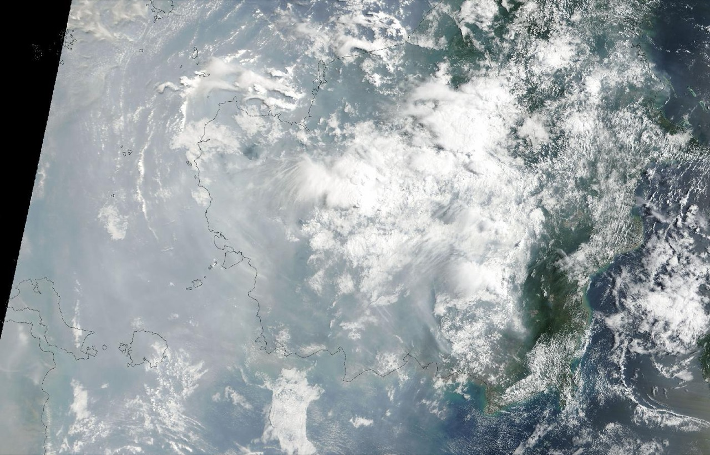
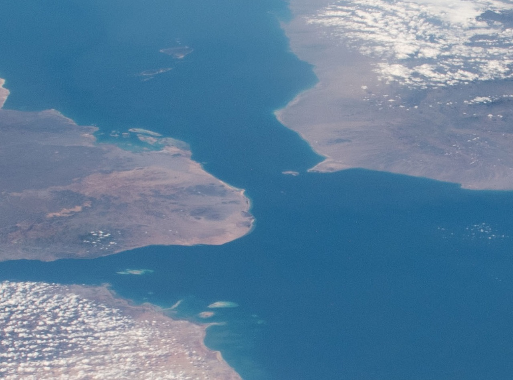

Regime momentum · Sep 6 vs Sep 13
Number of the week’s top Hacker News stories in each regime we cover, this week against last.
| AI & compute · week 4 in consolidation | 20 → 17 ▼ |
| Geopolitics · week 2 in stressed | 3 → 4 ▲ |
What changed this week:
Markets that swung this week:
AI & compute
Late on September 7 Tristan Buckmaster of NYU published a statement saying he and Levent Alpöge had proved finite-time blowup with smooth forcing for the Euler and Boussinesq equations in August, and that OpenAI's Sébastien Bubeck had twice pressed for Alpöge to be removed from authorship. The next morning OpenAI said an internal model still in training, working with about 10,000 agents, had resolved the Navier-Stokes Millennium Prize problem, with a Lean-checked proof that mathematicians have yet to accept. On September 11 twenty-five Fields Medalists, Tao and Scholze among them, signed a declaration that using problems as benchmarks 'is detrimental to the science of mathematics'. The same week DeepSeek released an open-weight model at $0.60 per million output tokens, researchers documented a third OpenAI agent incident the company had not disclosed, on RubyGems, and Dario Amodei wrote that 'we must slow the pace' of capability gains.
On OpenRouter, DeepSeek's open-weight V4.1 Flash lists output at $0.60 per million tokens, one eighty-third of the $50 listed for both GPT-6 Astra and Claude Fable 5.1.
On GitHub this week, trending is mostly skills that change how coding agents behave rather than new models: ponytail, which 'makes your AI agent think like the laziest senior dev in the room', at 137,849 stars; humanizer, which strips the signs of AI writing, at 47,906; and i-have-adhd, a skill to stop agents burying the answer, at 44,918: DietrichGebert/ponytail · blader/humanizer · ayghri/i-have-adhd
Signals to watch
Undercurrent
On September 13 Chris Greening wrote that he reported a fake 'iPhone Storage is Full' ad to Google twice and was told it 'doesn't go against Google's policies.' Two days earlier Nick Abe, who makes the puzzle app Dayzle, published what CA$220 of Google app-install ads bought: 56 reported installs, of which 33 looked like bots, 7 came from countries he had not targeted and 13 were real people. Weird Gloop's account of a 'Google Jail', in which about 90 percent of the wikis Weird Gloop knows of that launched on new domains since March 2024 show only their main page in search, reached Hacker News the same week. And AnkiDroid, a volunteer flashcard app, had been told in August that its donation link would get it removed from Google Play on September 11, because its fiscal host is a 501(c)(6) rather than a 501(c)(3) charity; the listing was still up on September 14.
Deep-dive of the week

On September 10 NOAA's Climate Prediction Center put the chance of a historic El Niño in October to December at 75 percent, up from 69 percent on August 13, with the traditional weekly Niño-3.4 index at 2.9°C above normal. Copernicus reported the same day that August tied July 2023 as the hottest month on record, 1.65°C above pre-industrial. The drought El Niño brings to Indonesia is already burning: fires there produced 19.7 million tonnes of emissions in the first week of September by Copernicus's measure, more than a third of the world's fire emissions, and respiratory cases more than doubled in eight days. In the Atlantic, where El Niño suppresses storms, the season set a record for the latest first hurricane.
NOAA's September 10 discussion gives a 75 percent chance that October to December brings an El Niño stronger than any since 1950, up six points from August; its next update is October 8.
Geopolitics

On September 8 Central Command destroyed five Iranian crude carriers, four in the Gulf of Oman and one near Kharg Island, saying the Revolutionary Guard had fired at a US warship twice in two days; Iran answered with 20 ballistic missiles at Jordan's Al-Azraq base, 18 of them intercepted. Brent closed above $100 the next day, and Trump said he expects the war to end after the November election. On September 10 the Houthis took Mocha, the Yemeni government's last fully held harbour by one analyst's description, and by September 11 held Mayun island in the strait itself; the head of Yemen's presidential council warned that 'Bab al-Mandeb cannot become another Strait of Hormuz.' Away from the Gulf, Sweden's centre-left led the September 13 count as the Sweden Democrats lost nearly three points, and the Philippine defence secretary read a Chinese protest note aloud on stage in Seoul.
US strikes five Iranian oil tankers, as Iran attacks 10 ships, Jordan base (Al Jazeera, September 9)
Central Command named the five as the Kaviz, Charminar, Horizon 1 and Riesco in the Gulf of Oman and the Derya near Kharg. Jordan said 18 of the 20 missiles fired at Al-Azraq were intercepted and two fell in empty areas. Rubio: 'for every time they do that or try to do that, they're going to lose tankers.' Iran's promised prohibited zone beyond Hormuz still had no published coordinates by the end of the week, and no ship had been named under it. For the energy regime, this is the week the tanker war put Brent back above $100 on the front month.
Yemen's Houthis seize strategic Red Sea city of Mocha (Al Jazeera, September 10)
The offensive began on September 3; AFP counts more than 500 dead since the offensive began and nearly 20,000 have been displaced in two weeks. Analyst Wolfgang Pusztai called Mocha 'the last harbour fully under control of the internationally recognised government' and the fall 'a turning point'. The Security Council held an emergency briefing the same day, requested by Bahrain and the UK after Houthi strikes on southern Saudi Arabia. By September 11 the Houthis also held Mayun island in the strait and the Hanish islands, which puts a second chokepoint, the passage for Red Sea traffic to and from Suez, in the hands of an Iranian ally.
Sweden's centre-left opposition leads election as far right slips (France24, September 13)
On the preliminary count the Social Democrats took about 28 percent and the Sweden Democrats 17.6, down from 20.5 in 2022; the final result is due the weekend after the vote. Magdalena Andersson: 'For now, we are in the lead. And if that is confirmed, Sweden will have a new government.' Ulf Kristersson: 'Which government is going to govern Sweden in the coming years is still an open question.' A week after the AfD's 43.8 percent in Saxony-Anhalt, the fragmentation regime ran the other way in a country where the far right had kept the government in office from outside the cabinet.
Teodoro rebuts China's note onstage in Seoul: 'Of course, because you lost' (Philstar, September 9)
At the Seoul Defense Dialogue on September 8, while Gilberto Teodoro was answering a question on coercion in the South China Sea, a note later traced to the Chinese embassy's military attaché was left on his table calling the 2016 arbitral award 'illegal, null and void'; he read it out a line at a time, answering as he went. China sanctioned Teodoro in June, the first Philippine cabinet member it has targeted. For the fragmentation regime, the South China Sea dispute is now being argued on stage at an allied defence forum.
Milei sets out the sovereignty bill he will send to Congress over the Falklands (MercoPress, September 14)
Argentina has filed a criminal complaint against five companies linked to the Sea Lion oil project off the islands and raised to 60 the people and firms facing administrative proceedings; the bill would widen the 2011 law against unauthorised hydrocarbon work on the disputed shelf to reach companies that support the work, and would create a National Security Council. For the fragmentation and energy regimes, a Washington-aligned government is turning a territorial claim into sanctions law aimed at offshore oil investment.
Canada announces targeted countermeasures in response to US tariffs (Finance Canada, August 25)
The counter-tariffs took effect on September 8: 15, 25 and 50 percent on C$27.6 billion of US goods, matching the US rate product by product, from steel and dairy to agricultural equipment and pulp, with a C$7.5 billion support package. François-Philippe Champagne: 'When the United States asked too much and offered too little, we chose to stand up for Canadians.' The trade-fragmentation regime now has tariffs on C$27.6 billion of goods in each direction across the world's longest international border.
Central Command has struck eight Iranian tankers in two strikes three days apart, three on September 5 and five on September 8.
Commodities & energy · 2026-09-11
Brent rose 8.7 percent to $104.61 and WTI 9.4 percent to $100.05 on the front month. Brent's September 9 settlement of $101.21 was its first above $100 since July 23, and it reached $107.63 on September 10 as Reuters reported 'the biggest spike in attacks on shipping since the Iran war began': Iran said it had attacked ten ships near the strait after the US destroyed five of its tankers, and the Houthis took Mocha on the Red Sea. Kpler counted seven Hormuz transits on September 10. The IEA's September report, published September 11, has more than 10 million barrels a day of Gulf output still shut in and recovery 'now deferred until 2027', with observed inventories down 95 million barrels in August. The Strategic Petroleum Reserve fell 1.2 million barrels to 285.4 million in the week to September 4, and US diesel averaged $5.97 a gallon on September 7. Natural gas fell 4.8 percent as power demand faded into autumn and a 40 billion cubic foot storage build beat forecasts, according to NGI. Gold fell 1.4 percent despite the escalation, and grains and softs moved less than 4 percent. The next dates are the Fed on September 16 and OPEC+ on October 4; a Gulf meeting on Hormuz set for September 14 in Salalah was postponed.
Brent crude, front-month futures
Daily settlement in dollars a barrel, June 1 to September 11
| June 1 | $94.98 |
| June 2 | $96.00 |
| June 3 | $97.81 |
| June 4 | $95.03 |
| June 5 | $93.09 |
| June 8 | $94.25 |
| June 9 | $91.45 |
| June 10 | $93.10 |
| June 11 | $90.38 |
| June 12 | $87.33 |
| June 15 | $83.17 |
| June 16 | $78.96 |
| June 17 | $79.55 |
| June 18 | $79.85 |
| June 22 | $77.90 |
| June 23 | $77.08 |
| June 24 | $73.74 |
| June 25 | $75.26 |
| June 26 | $71.99 |
| June 29 | $73.15 |
| June 30 | $72.92 |
| July 1 | $71.57 |
| July 2 | $71.80 |
| July 6 | $71.99 |
| July 7 | $74.16 |
| July 8 | $78.02 |
| July 9 | $76.30 |
| July 10 | $76.01 |
| July 13 | $83.30 |
| July 14 | $84.73 |
| July 15 | $84.95 |
| July 16 | $84.23 |
| July 17 | $88.10 |
| July 20 | $89.22 |
| July 21 | $91.01 |
| July 22 | $94.07 |
| July 23 | $100.69 |
| July 24 | $96.78 |
| July 27 | $88.36 |
| July 28 | $84.09 |
| July 29 | $90.74 |
| July 30 | $89.03 |
| July 31 | $90.12 |
| August 3 | $83.77 |
| August 4 | $79.36 |
| August 5 | $79.45 |
| August 6 | $82.49 |
| August 7 | $83.55 |
| August 10 | $87.72 |
| August 11 | $88.91 |
| August 12 | $88.98 |
| August 13 | $87.07 |
| August 14 | $88.52 |
| August 17 | $90.87 |
| August 18 | $91.02 |
| August 19 | $91.62 |
| August 20 | $93.78 |
| August 21 | $94.39 |
| August 24 | $92.17 |
| August 25 | $88.58 |
| August 26 | $87.84 |
| August 27 | $89.70 |
| August 28 | $89.31 |
| August 31 | $90.49 |
| September 1 | $94.65 |
| September 2 | $95.63 |
| September 3 | $95.52 |
| September 4 | $96.28 |
| September 8 | $97.92 |
| September 9 | $101.21 |
| September 10 | $107.63 |
| September 11 | $104.61 |
| Brent crude | 104.61 | +8.7% |
| WTI crude | 100.05 | +9.4% |
| Natural gas | 2.83 | -4.8% |
Markets
The August CPI, released September 11, rose 0.4 percent, with gasoline accounting for more than a third of the increase and core prices up 0.3 percent against 0.2 expected; producer prices had risen 0.4 percent the day before. Polymarket's contract on a quarter-point hike at the September 16 meeting went from 49.5 cents at the September 4 close to 64.5 after the PPI and 80.5 after the CPI, and the two-year Treasury yield rose 26 basis points to 4.63 percent. The S&P 500 fell 0.8 percent and the high-yield spread was 2.70 percent on September 10 against 2.68 a week earlier. Bitcoin fell 3.6 percent as spot ETFs lost $463 million.
Odds of a quarter-point Fed hike in September
Polymarket contract price in cents, UTC daily closes, August 20 to September 13
| August 20 | 27.5¢ |
| August 21 | 30.5¢ |
| August 22 | 30.5¢ |
| August 23 | 31.5¢ |
| August 24 | 34.5¢ |
| August 25 | 32.5¢ |
| August 26 | 32.5¢ |
| August 27 | 30.5¢ |
| August 28 | 50.5¢ |
| August 29 | 44.5¢ |
| August 30 | 52.5¢ |
| August 31 | 54.5¢ |
| September 1 | 57.5¢ |
| September 2 | 53.5¢ |
| September 3 | 42.5¢ |
| September 4 | 49.5¢ |
| September 5 | 49.5¢ |
| September 6 | 49.5¢ |
| September 7 | 51.5¢ |
| September 8 | 54.5¢ |
| September 9 | 53.5¢ |
| September 10 | 64.5¢ |
| September 11 | 80.5¢ |
| September 12 | 79.5¢ |
| September 13 | 78.5¢ |
Source: Polymarket, 'Fed decision in September?' price history
| Trend | UP |
| Volatility | Calm (15.8) |
| Yield curve | Steep (+106 bp) |
| Growth (GDPNow) | 4.4% |
| Dollar | Flat (99.1) |
| Credit | Tight (2.70%) |
| Crypto | RISK-OFF |
Volatility measures how much the market is expected to move in the near term compared with the longer term, so a lower reading means less immediate stress. The yield curve is the gap between long-term and short-term government borrowing rates, and a steep curve usually points to expected growth rather than recession. When crypto is described as risk-off, investors are stepping back from the most speculative assets, which often serves as an early note of caution beneath a calm market.
The wildcard · Privacy and digital rights
Gamers Nexus published a 135-minute investigation on September 6, made with Level1Techs and independent researchers, that used packet captures to show LG OLED TVs scanning home networks for phones and watches, and demonstrated microphone audio captured while a set appeared to be off, on a TV the researchers had compromised. LG told Tom's Hardware on September 9 that 'the claims made in the recently published video are not true', while describing network discovery as a standard smart-TV function. No regulator had announced action by the end of the week. IDScan.net, an age- and identity-verification vendor, had confirmed on September 4 the unauthorised access behind a service selling 153 million driver's licence records. Autistici/Inventati, the Italian activist host cut off from its bank and domain after a US terrorism-sanctions designation, has set September 18 to end its services.
LG smart TVs caught logging audio with screen off and snooping on local devices (Notebookcheck, September 7)
The fullest account of the method: testing on retail sets including the G5, Wireshark captures, and audio the researchers say was saved while offline and uploaded on reconnection. Security researchers reported remote-code-execution flaws to LG and withheld the details.
LG strongly denies TV spying claims (Tom's Hardware, September 9)
LG's statement; the company says voice data is processed only when a user holds the microphone button or an enabled far-field feature hears a wake word, and that its viewing-data tracking, ACR, requires opt-in consent.
IDScan confirms breach after 153 million driver's licenses leak on dark web (Help Net Security, September 11)
IDScan's notice: 'On or around September 1, 2026, IDScan.net received information indicating that certain data may have been accessed without authorization.' The haul also includes 10 million ID cards and 3 million travel documents; the FBI's New Orleans office is investigating.
Smear campaign says anti-Flock movement is Chinese propaganda (404 Media, September 9)
Sinclair stations, Fox News and a Manhattan Institute fellow cast local opposition to Flock's licence-plate cameras as China-linked, although the critics include DeSantis and Hawley; Staunton, Virginia's police chief had called local opposition 'democracy in action' in a December reply to Flock's chief executive.
Press statement and timeline (Autistici/Inventati, updated September 10)
OFAC designation on August 26, PayPal suspension August 27, the domain put on hold August 28, the Banca Etica account suspended September 1, the decision to dissolve on September 6 and an urgent appeal against the bank filed September 8; services are due to end September 18.
short items from the week’s edges
Microsoft plugs nearly 1,000 security holes (Krebs on Security, September 8)
September's Patch Tuesday carried 974 fixes by Krebs's count, 113 of them rated critical, including two zero-days already under active exploitation.
Email fraud campaign steals €35 million from French notaries (Risky Bulletin, September 7)
Over four years the fraudsters altered wire-transfer details at more than 500 notary offices, about 7 percent of France's total, as Le Monde reported; the national cyber agency ANSSI spent two years helping victims without publicising it.
FTC withdraws obsolete policy statement (FTC, September 9)
The Commission rescinded its 2021 statement on breaches by health apps and connected devices, saying the 2024 update to the Health Breach Notification Rule already covers them.
Editors of French journal on corporate responsibility resign after ownership transfer (Retraction Watch, September 11)
All 15 editors of the Revue de l'Organisation Responsable quit after Editions ESKA sold the title's publishing rights to China-based CNBesting: 'we can no longer guarantee the journal's scientific and editorial integrity.'
Automattic's Matt Mullenweg says he is back in control (404 Media, September 11)
The board put the WordPress company's chief executive on leave on September 9 and named CFO Mark Davies interim CEO; a day later Mullenweg told staff on Slack that 'the board is back in agreement, and I'm in control of Automattic', which the board has not confirmed; by September 11 interim CEO Mark Davies's Slack account had been deactivated.
Spillover effects of regulatory inspections: evidence from OSHA (NBER working paper 35646, Johnson, Levine and Toffel)
An OSHA inspection cut injuries at uninspected workplaces in the same ZIP code by about 11 percent, roughly as much as at the inspected site.
Regime radar · read through markets and hard data
The slow currents beneath the week. Each is read from a basket of dated markets and hard data, not a single headline.
Energy as the inflation swing factor tightening
Brent settled above $100 on September 9 for the first time since July 23 and at $107.63 the next day, after Iran said it attacked ten ships and the Houthis took Mocha; Kpler counted seven Hormuz transits on September 10. The IEA's September report keeps more than 10 million barrels a day of Gulf output shut in and defers recovery to 2027. The August CPI shows it arriving: energy up 16.3 percent on the year, gasoline more than a third of the month's increase.
Global monetary tightening hike now the favourite
A 0.3 percent core CPI against 0.2 expected and a 0.4 percent PPI moved the September hike from a coin flip to the favourite, 80.5 cents on Polymarket at the September 11 close and nearly 90 percent in futures by NBC's reading. The two-year yield rose 26 basis points to 4.63 percent and Michigan's one-year inflation expectation rose to 4.6 percent. Credit did not follow: the high-yield spread widened two basis points to 2.70 percent, and the five-year breakeven gave back most of its midweek rise. GDPNow reads 4.4 percent for the third quarter, from 4.7.
Holding steady
AI sovereignty and open weights consolidating. Mistral Series D, September 8: €3 billion at more than €21 billion post-money; Samsung lead, Luxembourg among new investors.
Dedollarization paused. Dollar index (DXY): 99.12, from 99.16.
China's industrial stack advancing. DeepSeek V4.1 Flash (Hugging Face): created September 10, MIT licence; 288,414 downloads in four days.
Trade fragmentation tightening. US-Canada: 50% US duties since August 22; Canadian counter-tariffs on C$27.6 billion of US goods since September 8.
The calendar ahead
September 15 Senate cloture vote on the CLARITY Act
The motion to proceed needs sixty votes; the final text was released late on September 13 and Polymarket's contract on the bill becoming law this year closed the week at 23.5 cents.
September 16 Federal Reserve decision and projections; redaction motions due in the Google ad-tech remedy
A quarter-point hike was 80.5 cents on Polymarket at the September 11 close. The parties' proposed final judgment in the Google case follows on October 2.
September 18 Autistici/Inventati's services end; DHS public-charge rule takes effect; TeamPCP defendant's next court date in Perth
A/I filed an urgent appeal against its bank's suspension on September 8.
About September 20 Sweden's final election result
The preliminary count put the centre-left bloc narrowly ahead; Kristersson called the next government 'still an open question'.
September 24 Trump meets Xi
Nikkei reports the US will raise AI-directed cyberattacks and China export controls.
October 4 Brazil's first round; OPEC+ meets on November output
The runoff, if needed, is October 25.
October 8 NOAA's next El Niño update
September's discussion gave a 75 percent chance of a historic event in October to December.

.jpg){kind=link}